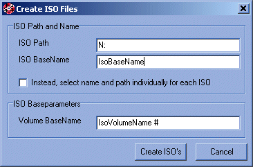

To output all found solutions to standard ISO files, you can use this option. This opens the dialog as shown above. For an explanation of what ISO files are, please see below. The ISO creation process is made possible by makeisofs, maintained by Joerg Schilling.
The ISO path is the folder where all the ISO files are created.
The ISO basename is the name of the ISO file. It will be padded with a number to guarantee uniqueness, resulting in files like IsoBaseName1.iso, IsoBaseName2.iso, etc..
You can also select the name and path individually for each ISO created. This way, you can divide the large ISO files across different partitions on your hard drive, ensuring you have enough space left to create them all.
The volume basename is the name for the ISO image (compare: partition name). All CD's/DVD's created will contain this name and a padded number as volumename, like "IsoVolumeName #1", "IsoVolumeName #2" etc.
ISO
9660 files are file-images of a medium.
Very flatly put, an ISO
file is like a partition on your harddrive: it has a name and contains
files and folders. The ISO standard is supported by many CD/DVD burning
tools, such as Nero Burning Rom. It can also be read and edited by such
programs as WinISO or WinImage. A typical BTTB operation involving ISO's
would be:
- Create a solution with Burn To The Brim (see quickstart)
- Create ISO images using this dialog.
- Open the ISO image in your favourite burning tool (ie. Nero)
- Burn the ISO image to a CD using this burning tool.